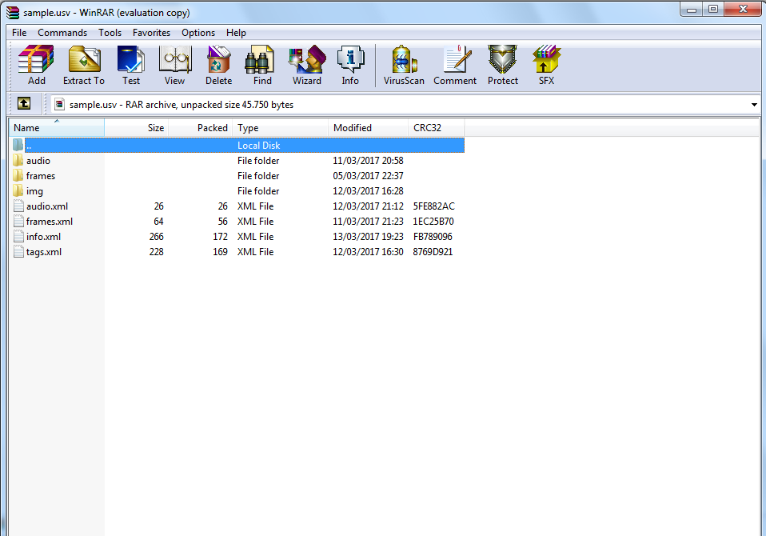
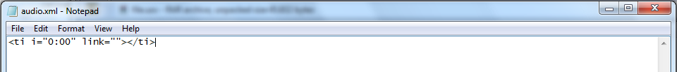
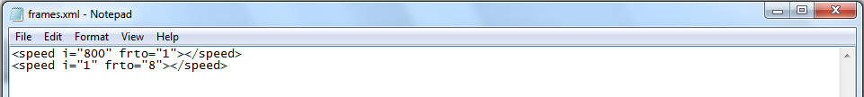
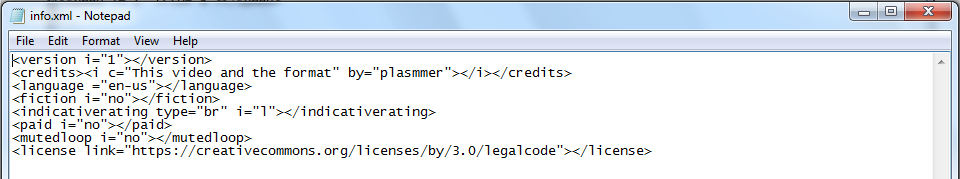
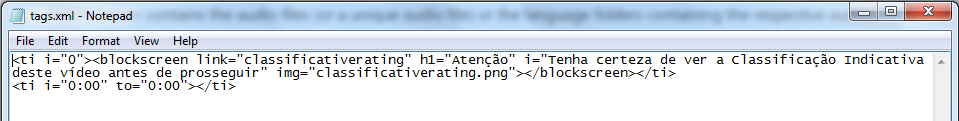

Home | Specs | Blog | Forum | Profile | Github

-----------------------------------------------------------------------------------------------------------------------
USV (Universal Smart Video), as the name says, is a format for smart/interactive videos. We can call it "the video of the future".
Do you imagine if we have the power of YT's videos in a file on our devices? A USV file can have credits to the authors, multiple language subtitles/audios, indicative rating, tags, etc. All it embedded into a single video file! Please read more in the specs to know.
A .USV file is just a compressed archive (.7z) with the extension changed, containing this structure:

The images/frames can be in both PNG or SVG, and the audios in both OGG or FLAC. All other infos are stored in XML files.Folders
- AUDIO folder contains the audio files (or a unique audio file) or the language folders containing the respective audios.
- Except the files (images), the same occurs in the FRAMES folder. The files need to be named in crescent numbers.
- IMG folder contains the images that will be used in the video, such as tags, the thumbnail, etc.
Files
- AUDIO.XML contains the time each audio will be played. In case of only one audio file, a unique tag will tell that it will start at 00:00.

- FRAMES.XML constains the speed a quantity of frames will be played till a frame-number.

- INFO.XML contains infos about the video, such as the version (of the format), credits, main language, if it is fictional, indicative rating, if it is paid and if it is a muted-loop video (alternative to GIF).

- TAGS.XML contains the type of tag and the time it will be played.
